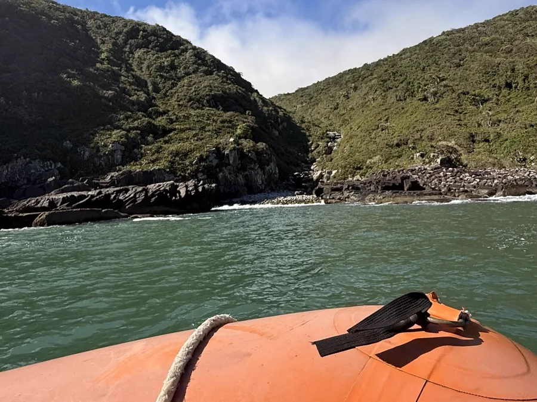

Pântano do SulLagoinha do Leste
Embarque na orla e retorno combinado
Embarque no Pântano do Sul (costão, 15 min antes) com colete. Na chegada, combine a volta com o barqueiro.
- ~30 min de navegação (6,4 km)
- Saídas a cada 45 min · Volta: [PLACEHOLDER: último horário de retorno]
- Até 25 pessoas · Sem mínimo de pessoas
R$ 80 só idaou R$ 160 ida e volta · por pessoa
Agendar